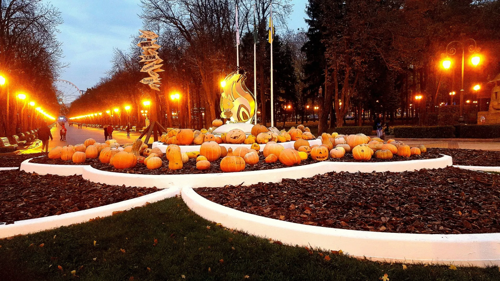
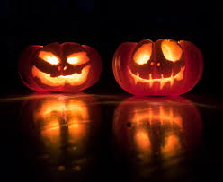
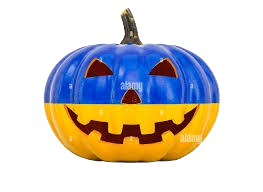

It was a cold, foggy Halloween night in Lviv. The city’s narrow streets were full of people in costumes — witches, vampires, skeletons — laughing, taking photos, and drinking hot coffee. But not everyone on the streets that night was alive.
At about midnight, the fog grew thicker, and the last tram — number 8 — came rolling out of nowhere. Its lights flickered weakly, and inside, it looked almost empty. Only a few passengers sat silently, dressed in old-fashioned clothes, their faces pale and blank.
Oksana, a student returning home from a Halloween party, was freezing and decided to get on the tram. She dropped her ticket money into the box and sat down near the window. Something felt strange — the air inside was cold, and no one moved or spoke.
She tried to look out, but the fog was so thick that even the city lights had disappeared. When she looked back at the passengers, she noticed that their eyes were all fixed on her. One old woman suddenly smiled — her teeth black, her skin gray as wax.
“Cold night, isn’t it?” the woman whispered.
Oksana nodded nervously, trying to laugh. But then she saw it — the tram wasn’t moving through Lviv anymore. Outside, there were no streets, no houses, only dark fields and crooked trees.
The driver turned around slowly, his face pale and hollow, his eyes two empty sockets.
“You shouldn’t have boarded this tram,” he said in a dry, echoing voice. “It doesn’t stop for the living.”
The next morning, the tram was found standing in the depot, empty. No one ever saw Oksana again. But every Halloween night, locals say they can still see tram number 8 moving through the fog, filled with pale passengers — and if you wave it down, it just might stop for you too.



Story created by AI
Halloween in Ukraine
Halloween is not a traditional Ukrainian holiday, but over the last few decades it has become very popular, especially among young people, students, and children. Influenced by American and European culture, Ukrainians have started to enjoy the fun and creative aspects of Halloween — dressing up, decorating, and partying. In big Ukrainian cities such as Kyiv, Lviv, Kharkiv, and Odesa, Halloween parties are organized in nightclubs, cafes, bars, and even universities. People wear costumes ranging from scary monsters, witches, vampires, and ghosts to famous characters from movies, TV shows, or pop culture. Many places hold costume contests, photo zones, and themed shows or concerts, and some restaurants even prepare special Halloween menus with “bloody” cocktails or spooky desserts.
For children, Halloween celebrations are usually held in schools, kindergartens, and entertainment centers. Kids might wear costumes, play games, carve pumpkins, or take part in small parades. Although traditional “trick-or-treating” is not very common in Ukraine, some neighborhoods and private communities are beginning to adopt the custom, especially in larger cities. Around the end of October, shops and cafes are often decorated with pumpkins, skeletons, spiders, bats, and fake cobwebs. People like to carve pumpkins and put candles inside to create glowing “jack-o’-lanterns,” and some decorate their homes or balconies to create a spooky mood. Shopping centers and theme parks often organize special events, quests, or haunted house attractions.
Ukrainian TV channels and cinemas often show horror movies or Halloween-themed episodes during this time. On social media, people post photos of their costumes or share Halloween makeup tutorials, while influencers and bloggers create content related to scary stories or costume ideas, which adds to the excitement of the holiday. While many Ukrainians enjoy Halloween as a fun and creative celebration, some older people or religious communities are less enthusiastic and see it as a foreign or overly “dark” tradition. However, for most people — especially the younger generation — Halloween is simply a day to have fun, express creativity, and enjoy the spooky atmosphere.